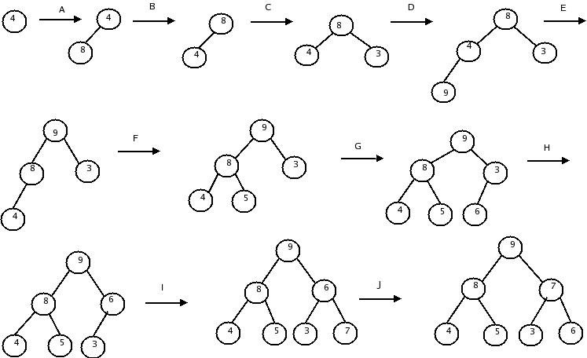
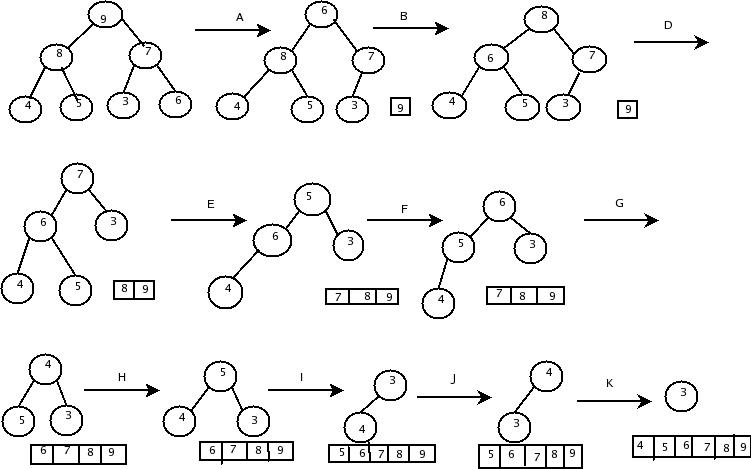

Heap sort is a sorting algorithm which was originally described by Floyd. This method sorts by building a heap, and then repeatedly extracting the maximum item.
Heap is a complete binary tree with the property that a parent is always greater than or equal to either of its children. Thus, the root node always contain the largest element.
Binary trees can be represented as arrays, by first numbering the nodes from left to right. The key values of the nodes are then assigned to array positions whose subscript is given by the number of node.
Heap sort supports two operations delete and insert.
Delete operation removes the root node and replace it with the last leaf. At this point the tree might not be ordered since most likely the new node is not the next largest element. We then migrate the root down the tree until we find its correct position, by swapping it with one of the two children as we preserve the heap property.
Insert operation inserts the new element as the last right most node in the binary tree. At this point the new node will most likely not be in the correct position, so we move it up the tree structure until its correct position is attained.
Heap sort simply uses the heap structure and operations. First it initializes the heap by putting the data from array onto a heap. Then we repeatedly rank the root(maximum) element out of the heap and put it at the end of the sorted table. Eventually the heap will be empty and the sorted table will contain all the elements.
The Heap sort method takes the input array of elements and then builds a heap based on the elements and finally produces the sorted elements. Thus, the Heap sort algorithm consists of two phases:
1.Building a Heap tree
2.Sorting
To build a heap , start with one element and insert the next element into the existing heap as in the insert operation, so that again heap is constructed. The insertion process is repeated until a heap builds for all input data elements.
Once the heap is constructed, the largest element in the input must be the root of the heap, located at position 1. In the sorting phase, the root is placed into its correct position, swapping it with the element at the bottom of the array. Then the properties of the heap are restored considering all the elements excluding the largest element, already placed in the sorted position. This is repeated until the heap is empty.
An example of the heapsort for the input elements 4,8,3,9,5,6,7 in action
1.Building heap:

2.Sorting
